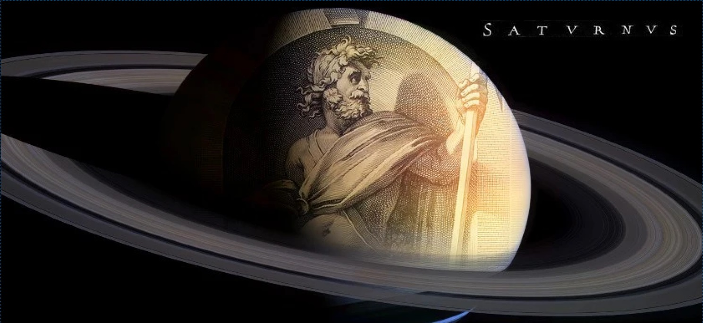

Saturn, the gas giant, boasts iconic rings and myriad moons. With a captivating oblate spheroid shape, it mesmerizes with golden hues. A realm of storms and celestial beauty in our cosmic neighborhood
The planet Saturn, a gas giant dominated by hydrogen and helium, lacks a defined surface but likely has a solid core. Its rotation gives it an oblate spheroid shape, flattened at the poles and bulging at the equator. With an equatorial radius over 10% larger than its polar radius (60,268 km vs. 54,364 km), Saturn's effective surface gravity is 74% at the equator compared to the poles. Despite being less dense than water, Saturn's core is denser, yielding an average specific density of 0.69 g/cm³ due to its atmosphere. With 95 times Earth's mass, Saturn, along with Jupiter, holds 92% of the Solar System's total planetary mass.
Saturn houses most of its mass in a non-ideal liquid phase due to the transition from gas to liquid at a density above 0.01 g/cm3. The interior structure is similar to Jupiter, featuring a small rocky core enveloped by hydrogen and helium, with trace volatiles. Saturn's core is denser than Jupiter, containing approximately 50% hydrogen by mass. The core, estimated to be 9–22 times Earth's mass, exhibits a complex structure with a liquid metallic hydrogen layer and a surrounding layer of helium-saturated molecular hydrogen. Saturn's hot interior, reaching temperatures of 11,700 °C at its core, results in significant energy radiation, exceeding its solar input. This thermal energy generation remains a topic of study, with potential contributions from the Kelvin–Helmholtz mechanism and heat produced by the "raining out" of helium droplets within Saturn's interior. The atmosphere of Saturn consists predominantly of molecular hydrogen (96.3%) and helium (3.25%). Its cloud layers exhibit a banded pattern similar to Jupiter, with varying compositions at different depths and pressures. The presence of ammonia, acetylene, ethane, propane, phosphine, and methane has been detected. Saturn experiences periodic storms, such as the Great White Spot, occurring approximately every 30 Earth years. Saturn's winds, the second fastest in the Solar System after Neptune's, reach speeds of 500 m/s (1,800 km/h). The planet displays a blue hue in its northern hemisphere, likely caused by Rayleigh scattering. Unique features include a warm polar vortex at the south pole, with temperatures as high as −122 °C, making it the warmest spot on Saturn.
Saturn, a god in ancient Roman religion and mythology, was associated with time, abundance, wealth, and agriculture. His reign was considered a Golden Age of peace and prosperity. After the Roman conquest of Greece, Saturn was merged with the Greek Titan Cronus. Saturn's consort was Ops, and together they parented Jupiter, Neptune, Pluto, Juno, Ceres, and Vesta. Saturn was honored during the festival of Saturnalia in December, known for feasting, role reversals, and revelry. The Temple of Saturn in the Roman Forum housed the state treasury. The planet Saturn and Saturday are named after him. In Roman mythology, Saturn and Janus were believed to have ruled the site of Rome before its foundation. Saturn was identified with the Greek Cronus, and Jupiter was considered his son. Saturn's mistresses represented different aspects of the god, including Ops, associated with wealth and abundance. During Saturn's rule, humanity experienced a "Golden Age" of spontaneous bounty from the earth without labor. He became known as the god of time.
Saturn is widely recognized for its striking planetary rings. Stretching from 6,630 to 120,700 kilometers outward from Saturn's equator, these rings are about 20 meters thick. Composed mainly of water ice with trace impurities, they also have a coating of roughly 7% amorphous carbon. Saturn's rings are the largest and most visible among the gas giants. There are two main theories about the origin of the rings. One suggests they are remnants of a shattered moon, possibly named "Chrysalis." The second proposes that they are leftovers from the original material that formed Saturn, with some ice in the E ring coming from Enceladus's geysers. Meteor bombardment may explain the varying water abundance in the rings. Beyond the main rings, at 12 million km from the planet, is the sparse Phoebe ring. It orbits in retrograde fashion at a 27° angle to the other rings. Moons like Pandora and Prometheus act as shepherd moons, preventing the rings from spreading out. Some moons cause density waves in Saturn's rings, aiding in mass calculations. Recent studies suggest that Saturn's rings may have formed from the collision of two moons a few hundred million years ago, according to astronomers' reports in September 2023.
Saturn boasts 146 moons, 63 with formal names, and an estimated additional 100±30 outer irregular moons larger than 3 km in diameter. Moonlets with 40–500 meters diameter in Saturn's rings are not considered true moons. Titan, the largest moon, holds over 90% of Saturn's orbital mass, including its rings. Rhea, the second-largest moon, may have a faint ring system and a thin atmosphere. Most of Saturn's moons are small, with 131 having a diameter less than 50 km. Traditionally, they are named after Titans from Greek mythology. Titan, unique in the Solar System, has a significant atmosphere and hydrocarbon lakes. In 2013, scientists detected polycyclic aromatic hydrocarbons in Titan's upper atmosphere, a potential precursor for life. NASA later claimed nitrogen in Titan's atmosphere originated from the Oort cloud, associated with comets. Enceladus, chemically similar to comets, is considered a potential habitat for microbial life. Cassini's 2015 flyby found ingredients to sustain life forms in its plumes. In 2014, NASA reported a potential new moon within Saturn's A Ring, imaged by Cassini in April 2013.